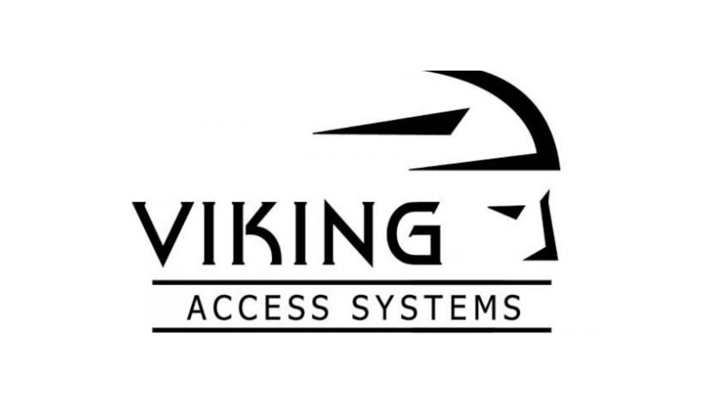
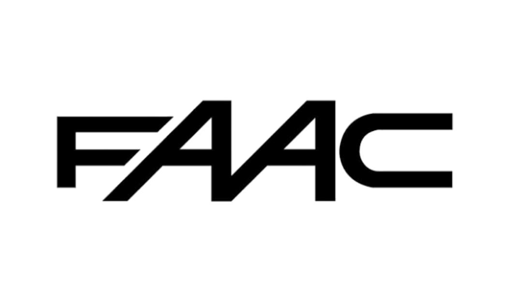
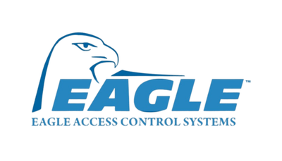
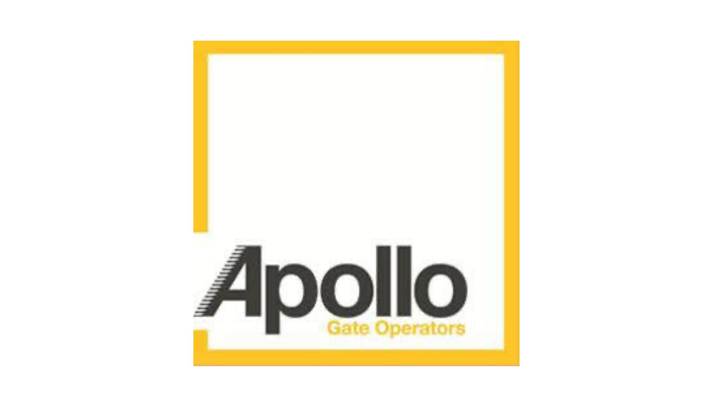
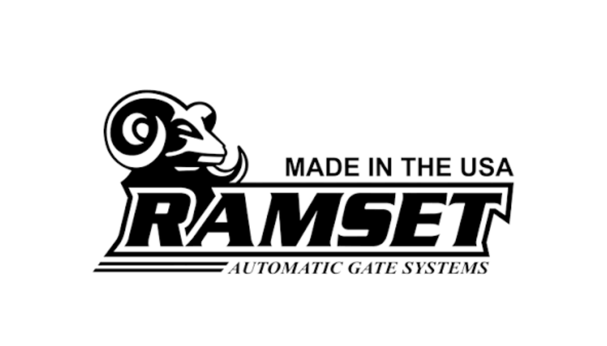

Brands We Service
Every Major Brand. One Phone Call.
Our technicians carry parts for all major brands on their trucks. Most DFW repairs are done in a single visit.
 LiftMaster
LiftMaster

Viking DoorKing
DoorKing

FAAC
Eagle
Apollo HySecurity Linear
Linear
 All-O-Matic
Elite
All-O-Matic
Elite

Ramset US Automatic
US Automatic
BFT
BFT
Don't see your brand? Call us — we service virtually every gate system on the market.
Call (214) 735-4314